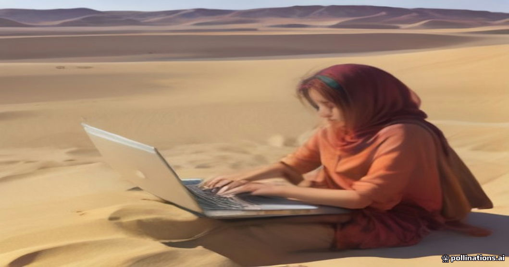

We frequently host remote workers who hope to keep up with Slack, join audio calls, or finish a few hours of focus work during the long drive to the desert. The short answer is that remote work on the Sahara road is entirely feasible, but only if you align your work schedule with the physical realities of Moroccan terrain, cell network geography, and vehicle power constraints.
The journey between Marrakesh or Fes and Erg Chebbi spans roughly 500 kilometers over mountain passes, river valleys, and open stone plateaus. Knowing where 4G signals drop out and how desert electrical systems operate makes the difference between a productive travel day and a stressful search for missing connectivity. For a deeper look at network carriers, read our practical overview of [cell service and wifi in the Sahara](/blog-cell-service-wifi-sahara-desert).
4G Hotspot Coverage Across the Route
Morocco's mobile infrastructure is surprisingly robust along major national routes, but coverage is bound by geography. IAM (Maroc Telecom) consistently provides the strongest coverage along desert highways, followed by Orange. Inwi works adequately in cities like Marrakesh, Fes, and Ouarzazate, but drops frequently on open desert roads.
Expect solid 4G LTE speeds (15–40 Mbps) in major towns along the way. However, cellular handoffs between towers can cause micro-disconnects while moving, which will disrupt live video calls or persistent SSH sessions. Save interactive meetings for planned stops in town centers.
- Marrakesh / Fes to Foothills: Strong 4G coverage near cities and major agricultural hubs.
- Atlas Mountain Passes: Spotty 3G/4G; complete dead zones inside steep rock cuts and high gorges.
- Dades & Todra Valleys: Reliable signal on valley floors; drops instantly deep inside canyon walls.
- Erg Chebbi Desert Edge: Excellent 4G (IAM) near Merzouga and dune-edge camps; degrades deeper into the sand dunes.
Power Management: Laptops, Power Banks, and Vehicle Outlets
Do not rely on standard vehicle USB ports to charge a laptop. The built-in USB ports in most 4x4s and minibuses supply basic 5V/1A or 5V/2.1A power, which is sufficient to slow-charge a phone, but will not hold a modern laptop battery steady while in use.
To keep a laptop powered during an 8-hour drive day, bring a high-capacity power bank supporting USB-C Power Delivery (PD) rated at minimum 65W output and 20,000mAh capacity. If traveling on a private tour, you can also bring a compact 12V DC-to-AC car inverter to plug into the driver's cigarette lighter socket.
Managing Motion Sickness and Work Ergonomics
The road over the Tizi n'Tichka pass features dozens of sharp switchbacks over a 2,200-meter elevation profile. Typing on a laptop while looking down in a moving vehicle on mountain curves causes rapid motion sickness, even for travelers who rarely experience it. If you are prone to nausea, consult our notes on [managing motion sickness on Tichka Pass](/blog-managing-motion-sickness-tichka-pass).
Structure your workday by task type: use winding mountain segments for listening to recorded audio, reviewing downloaded documents, or resting. Reserve active typing and laptop work for the flat, straight stretches between Ouarzazate and Erfoud, or handle your tasks during evening hotel stops.
Working from Desert Camps: Wi-Fi vs Local Hotspots
Camp Wi-Fi routers run on satellite or line-of-sight cellular receivers and are usually shared across all guests, leading to heavy congestion after sunset. For reliable internet at camp, tether your laptop to your own local IAM SIM card on your smartphone.
Dust and solar heat are the primary hardware risks in Erg Chebbi. Fine silica dust can enter open keyboard switches and USB ports, while afternoon temperatures degrade lithium-ion battery health. Keep your laptop inside a closed case when not active, and work in shaded communal tents rather than direct sunlight. For details on generator versus solar power setups, review our guide to [luxury desert camp vs edge hotel](/blog-luxury-desert-camp-vs-edge-hotel).
| Route Segment | IAM (Maroc Telecom) 4G | Orange 4G | Power Source |
|---|---|---|---|
| Tizi n'Tichka Pass | Spotty (drops in canyons) | Unreliable | 12V vehicle socket / PD Power Bank |
| Ouarzazate & Skoura | Strong 4G / 4G+ | Strong 4G | Hotel grid power / Cafe outlets |
| Dades & Todra Valleys | Good on main road; zero in gorge | Fair; weak in canyon | Hotel grid power overnight |
| N13 Midelt to Errachidia | Solid 4G along plateau | Moderate 4G | PD Power Bank / 12V socket |
| Erg Chebbi Dune Edge | Reliable 4G (10–30 Mbps) | Variable (3G to 4G) | Camp solar micro-grid (220V) |

Illustration, not a photograph — for the real thing, you'll have to stand on the ridge yourself.
Quick answers
A few follow-up questions travelers ask about this.
Can I hold Zoom or Teams video calls while driving?
We recommend avoiding video calls while the vehicle is in motion. Signal handoffs between cell towers cause frequent micro-drops that tear down video streams, though standard audio calls generally remain stable.
Do desert camp tents have dedicated desks and outlets?
Luxury camps typically feature small writing desks and standard 220V wall outlets in the tent. Standard camps offer outlets only in communal dining tents and low tables in central seating areas.
Will lithium laptop batteries drain faster in the heat?
Yes. High ambient temperatures increase internal battery resistance, causing laptops to discharge faster and throttle CPU performance. Never leave electronics sitting on dashboards or in direct sunlight inside parked vehicles.
Planning your own route?
Tell us your dates and what matters to you — we'll answer with a straight recommendation, not a brochure.
Send an inquiry See the itineraries